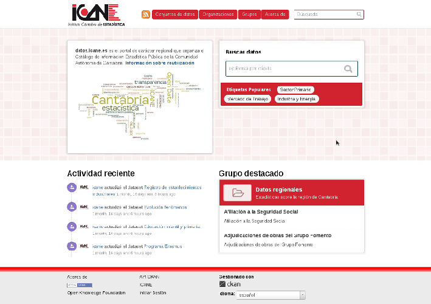
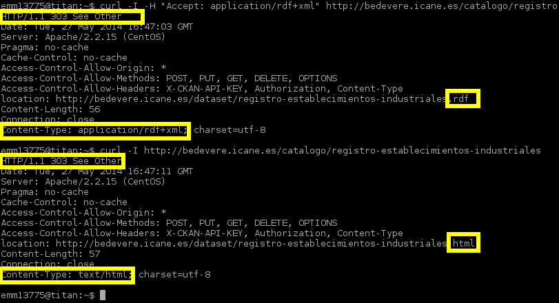
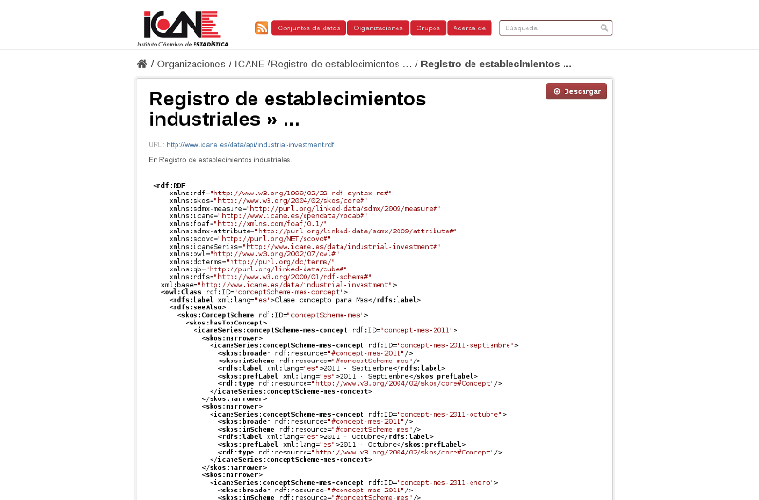
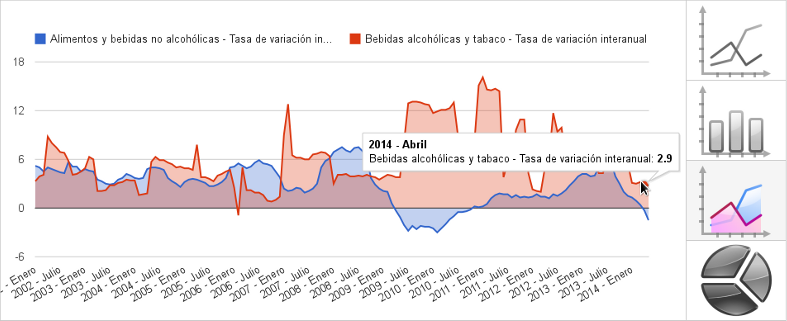
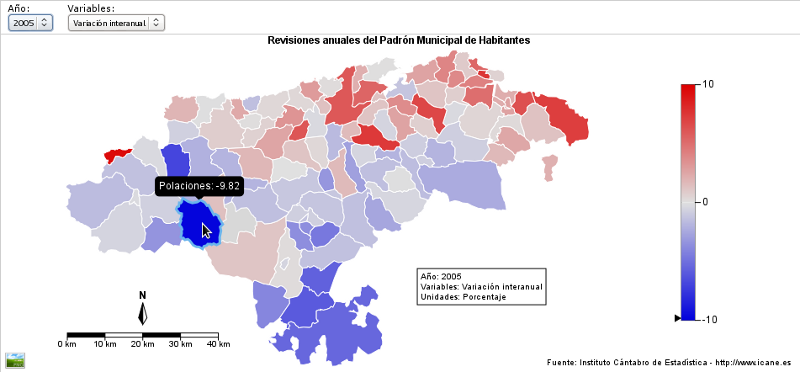
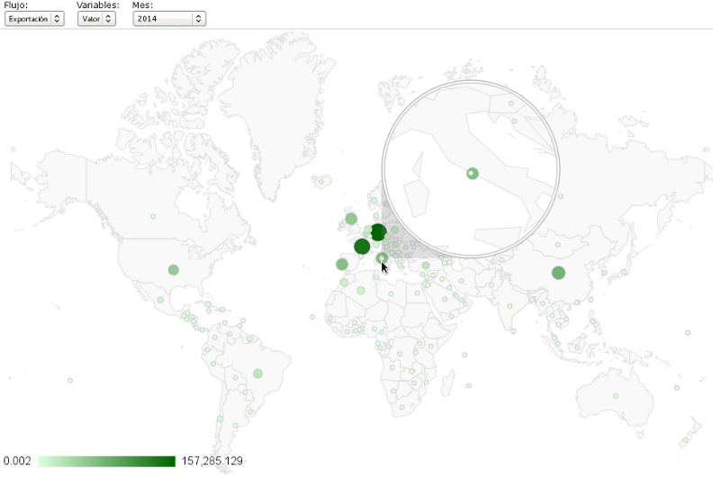
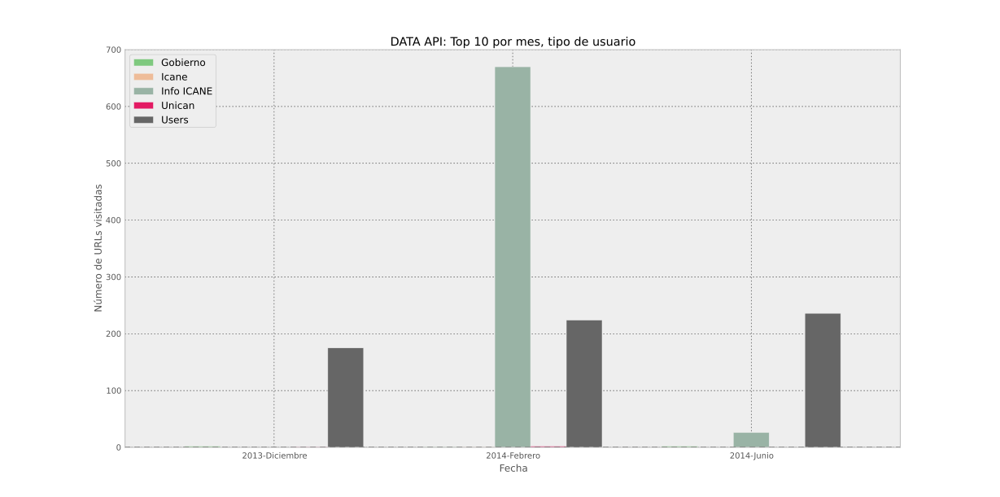
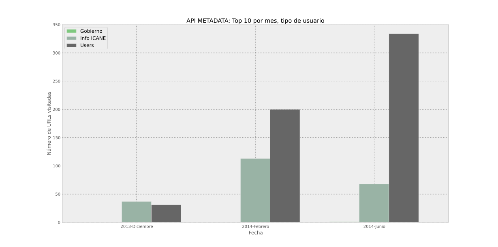
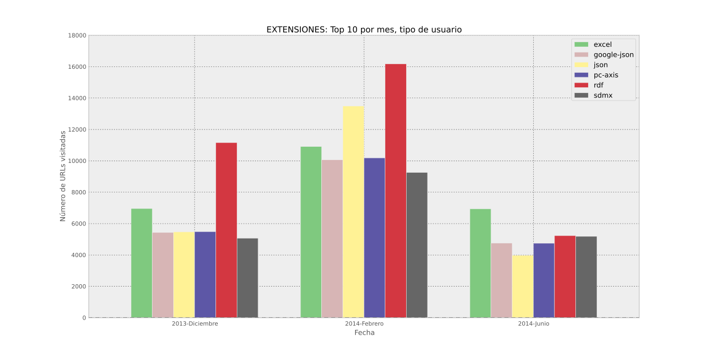

estrategias de
difusión web de
datos estadísticos
en Cantabria
datos tabulares

OLAP y estadística
| allí donde haya problemas... | ponga yo solución |
|---|---|
| cruces indiscriminados de datos | restricciones en miembros calculados |
| integración con metadatos | microservicio proveedor de metadatos |
| rendimiento / escalabilidad | caché, balanceo de carga |
| valores no numéricos | no aplica al sistema Mondrian |
| secreto estadístico | optimizador lineal y ocultación de celdas |
| coste y dependencia tecnológica | servicio IT modesto + metodologías ágiles |
| poca flexibilidad | arquitectura modular: microservicios y plugins |
Familia PC-AXIS: Estrategia de difusión de información estadística, Alberto González Yanes
arquitectura difusión
arquitectura data
formatos
| consumo | complejidad | popularidad | metadata | |
|---|---|---|---|---|

|
manual | baja | muy alta | alta |

|
manual/auto | media | alta | alta |

|
auto | muy alta | muy baja | alta |
| auto | muy baja | muy alta | alta | |

|
auto | media | baja | muy alta |
interesante...
APIS... APIs everywhere
- Necesidad de normalización y reutilización de metadatos
- Definición del dominio de información ICANE
- Implementación: microservice RESTful
- Potentes herramientas facilitadoras
API restful metadata
http:// {host} + /{app} +
/{entity} + /{uri_tag}
documentación
API restful data
http:// {host} + /{app} +
/ {uri_tag} + . {ext}
web semántica
conceptos
Retos y Oportunidades en Archivos y Gestión Documental ante la Web Semántica, Ana Carrillo Pozas
semstats: ¿para qué?
- mejorar acceso y facilitar análisis de datos estadísticos
- datos bien descritos y contextualizados
- nuevas asociaciones entre conjuntos de datos
- facilidad para habilitar procesamiento automático de recursos web
modelo RDF
Implementation of a Linked Open Data solution for the Statistics Agency of Cantabria's metadata and data bank, Alejandro Villar Fernández
XHTML + RDFa icane.es
vocabulario icane
linked open data
Ubiquity RDFa parser aplicado a http://www.icane.es/population/
enlazado : ¿qué?
| entidad | # | propiedad | # links |
|---|---|---|---|
| Section | 4 | dcterms:subject | 18 |
| rdfs:seeAlso | 1 | ||
| Subsection | 27 | dcterms:subject | 141 |
| rdfs:seeAlso | 43 | ||
| Folder | 703 | skos:closeMatch | 161 |
| rdfs:seeAlso | 199 | ||
| ReferenceArea | 6 | owl:sameAs | 10 |
| rdfs:seeAlso | 15 | ||
| Source | 2694 | foaf:page | 2472 |
Implementation of a Linked Open Data solution for the Statistics Agency of Cantabria's metadata and data bank, Alejandro Villar Fernández
enlazado: ¿con quién?
| Base de datos | # enlaces |
|---|---|
| Geonames | 4 |
| DBpedia | 45 |
| DBpedia española | 47 |
| INE | 251 (no RDF) |
| Eurostat | 22 (no RDF) |
| LEM para Bibliotecas Públicas | 168 |
| LEM de la Biblioteca del Congreso de EEUU | 151 |
Y además... ICANE está en the Datahub y programmableweb
punto SPARQL
RDF data cube
| cubo | RDF DataCube dataset |
| dimensión | Concept Scheme + Concept class + DimensionProperty |
| medida | RDF DataCube MeasureProperty |
| celda | RDF DataCube Observation |
retos
- dificultad para comunicar propósito y valor
- establecer vocabularios estadísticos de uso común
- uniformizar conceptualmente dimensiones en series estadísticas
- mantenimiento de los enlaces de datos
- dificultad para usar datos enlazados externos y ser enlazado
datos abiertos
“El opendata es el cuasi-estado de naturaleza de la difusión de estadísticas oficiales”
Opendata en Canarias, la estadística como showcase, Alberto González Yanes
¿qué falta?
marco normativo
Opendata y Gobierno Abierto: La continuidad en una política pública, Emilio García García
objetivos
- ofrecer "escaparate" alternativo de datos
- complementar portal con catálogo NTI RISP
- incorporar API estándar con función de búsqueda
- cubrir carencias redes sociales
- ser referencia de datos abiertos en Cantabria
Norma Técnica de Interoperabilidad de Reutilización de recursos de la información y su Guía de aplicación
requisitos
NTI RISP y especialmente:
- automatización de carga y actualización de datasets
- mecanismos HTTP 303 y 410
- construcción de URIs
- previsualizadores
solución
UK, USA, Berlin, Aragon |
||||||||

|
|

|
|
|||||

|
|

|
|
|||||
tema ICANE
metadatos NTI RISP
| CKAN | NTI RISP |
|---|---|
| Descripción | dct:description |
| Etiquetas | dct:keyword |
| URL dataset | dct:identifier, foaf:homepage |
| Título | rdfs:label, dct: title |
| Fecha de creación | dct:issued |
| Fecha de modificación | dct:modified |
| Extra 'accrualPeriodicity' | dct:accrualPeriodicity |
| Extra 'URI' | dct:references |
| Extra 'spatial' | dct:spatial |
| Recurso | dct:distribution |
| Autor | dct:creator |
| Texto estático "es" | dct:language |
| Datos estáticos contacto | dct:publisher |
| URL licencia | dct:license |
esquema de URIs
| catálogo | |
http://
{base}/catalogo | |
http://datos.icane.es/catalogo |
|
| conjunto de datos | |
http://
{base}/catalogo/{dataset} | |
http://datos.icane.es/catalogo/registro-establecimientos-industriales |
|
| recurso | |
http://
{base}/recurso/{sector}/{dominio}/{clase}/{id}.{ext} | |
http://
datos.icane.es/recurso/industria/registro-establecimientos-industriales/serie/inversion-industrial.rdf |
|
negociación + 303
previsualizadores
dataviz: básica
Google Charts: simple y con poco código
dataviz: mapas
Raphael.js: estándar (SVG) y browser-compatible
dataviz: Google Geomap
toolboxes
- Liberación de cliente de metadatos en Github
- Fomento e impulso de desarrollo Python, R, Javascript
- Desarrollo de ejemplos: notebooks, snippets, gists
SPAs
APIs restful data y metadata
+
 +
+
+
+
=
Fichas municipales de Cantabria
Responsive Web Design
“Write once, run everywhere”
-
Apps móviles ¿híbridas? con
: una app más
- Ejemplo: Financial times
- En estadística: gráficas y datos al vuelo
números: €
| Componente | € aprox |
|---|---|
| API metadata | 9000 |
| API data | 1000 |
| linked open data | 5750 |
| exportación JSON | 1500 |
| portal opendata | 5000 |
| dataviz | 4250 |
uso API data
uso API metadata
API data por formato

Acceso al repositorio con la presentación
Jefe de Sección de Informática Estadística y Banco de Datos